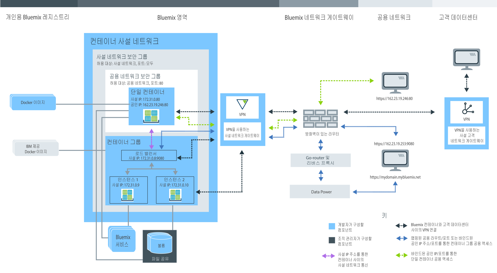

단일 및 확장 가능 컨테이너 사용 계획
• 단일 컨테이너 및 확장 가능 컨테이너 그룹에 대한 Bluemix 조직 관리
• 개인용 Bluemix 레지스트리에 대한 네임스페이스 설정
• 할당량 및 사용 가능한 Bluemix 계정 유형
• 지속적 스토리지 설정
• IBM Bluemix Container Service에 단일 컨테이너 및 확장 가능 컨테이너 그룹 작성
• Bluemix GUI, CLI 또는 REST API
• IBM 공용, Docker Hub 및 개인용 이미지
• 사설 컨테이너 네트워크 설정
• 공용 네트워크 설정
• Bluemix 서비스 통합
• 지속적 데이터 스토리지 옵션
• 컨테이너 유형
• 모니터링 및 로깅 옵션
사용자 역할 이해
컨테이너는 조직 관리자 및 컨테이너 개발자에 의해 관리됩니다. 다음 이미지는 조직의 샘플 컨테이너 구성을 표시하고 조직 관리자나 컨테이너 개발자 중 하나가 설정할 수 있는 컴포넌트를 강조표시합니다. 
모든 컴포넌트, 의사결정 및 작성할 수 있는 구성에 대한 정보를 찾으려면 이 주제의 하위 섹션을 검토하십시오. 컨테이너를 작성한 후 이러한 구성 중 일부는 변경할 수 없습니다. 사전에 이러한 구성을 파악하면 메모리, 디스크 공간 및 IP 주소와 같은 모든 리소스를 개발 팀에서 사용할 수 있도록 보장하고 조직 할당량의 사용을 극대화하는 데 도움을 줄 수 있습니다.IBM Bluemix Container Service를 위한 Bluemix 조직 관리
Bluemix에서 조직을 사용하여 팀 구성원 간 협업을 활성화하고 프로젝트에서 클라우드 리소스의 논리적 그룹화를 용이하게 할 수 있습니다. 모든 조직에는 개발 환경(영역)을 설정하고 팀 구성원에게 앱의 컨테이너를 작성하는 데 필요한 클라우드 리소스에 대한 액세스 권한을 부여할 책임이 있는 조직 관리자를 지정합니다. 이 설정에는 공인 IP 주소, 데이터 스토리지 및 컨테이너 메모리 지정이 포함됩니다. 조직 관리자는 현재 할당량과 클라우드 리소스의 사용을 보고 필요한 대로 조정할 수도 있습니다.
- 조직에서 사용자에게 관리자 역할을 제공하여 조직 관리자를 지정하십시오.
- 영역에서 사용자에게 개발자 또는 감사자 역할을 제공하여 컨테이너 작성자를 지정하십시오.
개인용 Bluemix 레지스트리에 대한 조직의 네임스페이스 설정
IBM Bluemix Container Service의 개인용 이미지를 저장하고 관리하기 위해, 모든 조직은 Bluemix에서 자신의 개인용 고유 Docker 이미지 레지스트리를 설정해야 합니다. 개인용 레지스트리의 이 이름을 네임스페이스라고 하며, 이는 Bluemix 내에서 고유해야 합니다.
다음 규칙을 고려하여 조직의 네임스페이스를 선택하십시오.
- 네임스페이스는 Bluemix에서 고유해야 합니다.
- 네임스페이스의 길이는 4-30자일 수 있습니다.
- 네임스페이스는 하나 이상의 문자 또는 숫자로 시작해야 합니다.
- 네임스페이스에는 소문자, 숫자 또는 밑줄(_)만 포함할 수 있습니다.
Bluemix GUI에서 다음의 단계를 수행하십시오.
CLI에서 IBM Bluemix Container Service에 로그인한 후 다음 명령을 실행하십시오.
조직의 네임스페이스 검색
조직의 네임스페이스가 이미 설정된 경우 Bluemix GUI 또는 CLI에서 이를 검색할 수 있습니다.
Bluemix GUI에서 다음의 단계를 수행하십시오.
CLI에서 IBM Bluemix Container Service 서비스에 로그인하고 다음 명령을 실행하십시오.
할당량과 Bluemix 계정
Bluemix의 모든 조직에는 조직의 모든 영역에서 공유되는 서비스 수, 파일 공유, 공인 IP 주소, 컨테이너 메모리의 값이 사전 설정되어 있습니다. 이러한 사전 설정 값을 할당량이라고 합니다.
Bluemix 계정 유형
| 계정 유형 | 설명 |
|---|---|
| 무료 평가판 | 단일 및 확장 가능 컨테이너의 무료 평가판은 사용할 수 없습니다. 클러스터 관리에 대해 알아보고 Bluemix 퍼블릭에서 IBM Bluemix Container Service의 Kubernetes로 마이그레이션하십시오. |
| 종량과금제 | 종량과금제 계정에 가입하면 사용하는 Bluemix 리소스에 대해서만 지불합니다. |
| 구독 | 구독 계정에 가입하면 매달 최소 구매를 약정하고 최소 비용에 적용되는 구독 할인을 받습니다. 최소 구매 금액을 초과하는 사용량에 대해서도 지불합니다. |
| Bluemix 데디케이티드 | Bluemix 데디케이티드를 사용하면 최소 1년 간의 기간 동안 가입해야 합니다. 해당 기간 동안 매달 지불하는 금액은 원하는 전용 서비스와 모든 공용 서비스에 대한 액세스 권한을 제공하는 구독 계정을 기반으로 합니다. |
| Bluemix 로컬 | Bluemix 로컬을 사용하면 최소 1년 간의 기간 동안 가입해야 합니다. 해당 기간 동안 매달 지불하는 금액은 원하는 로컬 서비스와 모든 공용 서비스에 대한 액세스 권한을 제공하는 구독 계정을 기반으로 합니다. |
유료 계정의 기본 할당량
| 리소스 | 유료 계정 할당량 한계 |
|---|---|
| 공인 IP 주소 | 64 |
| 컨테이너 메모리 | 64GB 참고: 컨테이너의 실행 여부와 상관없이 영역에 있는 모든 컨테이너가 할당량
사용에 포함됩니다. 메모리를 사용 가능하게 하려면 사용하지 않는 컨테이너를 제거해야 합니다.
|
| 파일 공유 | 10 파일 공유 |
| 컨테이너 및 컨테이너 그룹 | 무제한 수 참고: 컨테이너와 컨테이너 그룹의 크기는 컨테이너 메모리 한계에
합산되지만 특정 컨테이너 수로 제한되지 않습니다.
|
| 이미지 | 25 참고: IBM 이미지는 사용자의 개인용 Bluemix 레지스트리의 이미지 제한 수에 포함되지 않습니다.
|
| 영역 | 무제한 수 참고: 모든 영역에는 적어도 2개의 공인 IP 주소, 2GB의 컨테이너
메모리가 필요하며 이는 새 영역에 로그인하는 경우와
IBM
Bluemix Container Service와 함께 사용할 경우 자동으로 할당됩니다. 이와 같은 리소스는 할당량까지
계수되지만 특정 개수의 영역만 사용하도록 제한되지는 않습니다.
|
영역에 할당량 할당
- 조직 관리의 계정 세부사항에서 조직을 선택하십시오.
- 할당량 섹션에서 컨테이너의 세부사항을 보십시오.
- 할당량 할당 테이블에서, 편집 단추를 클릭하여 영역당 할당된 할당량을 변경하십시오.
- 저장 단추를 클릭하여 변경사항을 저장하십시오.
할당량 사용을 최대화하는 팁
- 사용하지 않는 컨테이너의 구성이 할당량에 가산되지 않도록 해당 컨테이너를 반드시 제거하십시오. 자세한 정보는 단일 컨테이너 제거, 컨테이너 그룹 제거 및 다중 컨테이너 앱 제거를 참조하십시오.
- 인터넷에서 컨테이너에 액세스하지 않아야 하는 경우 컨테이너에 공인 IP 주소를 바인드하지 마십시오.
- 공인 IP 주소 사용량을 줄이려면 단일 컨테이너 대신 컨테이너 그룹을 사용해 보십시오. 컨테이너 그룹은 IP 주소 할당량이 적용되는 공용 액세스를 위한 라우트를 사용합니다. 자세한 정보는 Bluemix GUI에서 컨테이너 그룹으로 장기 서비스 실행의 내용을 참조하십시오.
지속적 데이터 스토리지
조직 관리자는 스토리지 영역의 요구 사항을 충족하기 위해 특정 스토리지 크기 및 IOPS의 파일 공유를 작성할 수 있습니다. 파일 공유는 20GB - 12TB의 크기와 GB당 0.25 IOPS, 2 IOPS 또는 4 IOPS로 프로비저닝될 수 있습니다. IOPS 수와 관련된 파일 공유 크기는 컨테이너 볼륨의 데이터 읽기 및 쓰기 속도에 영향을 미칩니다.
Bluemix에서 IBM Bluemix Container Service로 컨테이너 작성
Bluemix에서 IBM Bluemix Container Service와 함께 앱을 실행할 컨테이너를 작성하려면 조직 영역에 대한 개발자 권한이 있어야 합니다. 앱의 개발자로서 컨테이너 컴포넌트가 서로 어떻게 연관되어 있고 앱의 기능 및 비기능 요구사항을 충족시키기 위해 컨테이너 구성을 어떻게 변경할 수 있는지를 파악하는 것이 중요합니다.
Bluemix GUI, 명령행, REST API
IBM Bluemix Container Service에 대해 작업하려는 경우 Bluemix GUI를 사용하거나, 명령행 인터페이스(CLI)를 설치하거나, REST API에 대해 HTTP 요청을 보내 IBM Bluemix Container Service에 액세스할 수 있습니다.
Bluemix GUI와 CLI를 사용하면 IBM Bluemix Container Service에서 대부분의 작업을 완료할 수 있습니다. 그러나 일부 태스크는 Bluemix GUI 또는 CLI 중 하나를 통해서만 수행할 수 있습니다. 따라서 둘 다를 사용하여 컨테이너를 관리하도록 준비하십시오.
Bluemix GUI나 CLI를 모두 사용하지 않으려는 경우에는 HTTP 요청을 직접 IBM Bluemix Container Service API 서버에 보내 REST로 컨테이너를 관리할 수 있습니다.
다음 표에서는 Bluemix GUI, IBM Bluemix Container Service CLI, 또는 REST API 중 하나를 필요로 하는 모든 컨테이너 관련 태스크를 보여줍니다. 여기에 나열되지 않은 태스크는 모든 방법으로 수행될 수 있습니다.| 태스크 | GUI | CLI | API |
|---|---|---|---|
| 이미지 취약점 검토 |  |
|
|
| 이미지를 레지스트리로 푸시 | |
||
| 레지스트리에서 이미지 가져오기 | |
|
|
| Docker Hub에서 이미지 복사 | |
|
|
| 할당량 변경 | |
|
|
| 조직과 영역 특정 할당량 검색 | |
|
|
| 자세한 로깅 정보 보기 | |
|
|
| 추가 로그 지정 | |
|
|
| 로그 사용자 정의 | |
|
|
| 실행 중인 컨테이너에 로그인 | |
|
|
| Docker Compose 사용 | |
|
|
| 영역의 볼륨 나열 | |
||
| 파일을 볼륨에 쓰기 | |
|
|
| 볼륨 삭제 | |
||
| 시스템 메시지 검색 | |
|
CLI 설치
IBM Bluemix Container Service CLI를 설치 및 구성하여 CLI에서 컨테이너를 관리합니다.
REST API를 통해 컨테이너 관리
REST를 사용하여 단일 컨테이너와 컨테이너 그룹에 대한 작업을 수행하려면 IBM Bluemix Container Service API를 사용하십시오.
IBM 공용, Docker Hub, 개인용 이미지
컨테이너 이미지는 작성하는 모든 컨테이너의 기초가 됩니다. 이미지는 빌드 아티팩트(예: 앱, 앱의 구성 및 이의 종속 항목) 및 이미지를 빌드하는 지시사항이 포함된 파일인 Dockerfile에서 작성됩니다. 컨테이너 이미지를 실행 파일(.exe 또는 .bin)로서 생각하십시오. 실행 가능 앱 파일을 실행하는 즉시 앱의 인스턴스가 작성됩니다. 컨테이너를 실행하면 이미지에서 컨테이너 인스턴스가 작성됩니다. 컨테이너 이미지는 개인용 Bluemix 레지스트리에 저장되며 CLI에서만 추가할 수 있습니다. 우선 사용할 모든 컨테이너 이미지가 레지스트리에 있어야 여기에서 컨테이너를 작성할 수 있습니다.
- IBM 공용 이미지
- IBM Bluemix Container Service의 기능을 테스트하기 위해 IBM Liberty 및 IBM Node 이미지와 같이 IBM Bluemix Container Service에서 제공하는 IBM 공용 이미지 중 하나로 시작합니다. 그런 다음 이러한 이미지 중 하나를 상위 이미지로 사용하고 Dockerfile을 수정한 다음 고유 앱 코드로 고유 이미지를 빌드할 수 있습니다.
- Docker Hub의 이미지
- 개인용 Bluemix 레지스트리로 Docker Hub에서 이미지를 직접 복사하거나 Docker Hub에서 이미지 가져오기를 수행하여 로컬로 수정한 다음 레지스트리에서 직접 빌드하십시오.
- 고유 이미지 작성
- 로컬 Docker 환경에서 이미 사용 중인 컨테이너 이미지가 있으면 개인용 Bluemix 레지스트리에 푸시하여 IBM Bluemix Container Service에서 사용할 수 있습니다. 로컬로 자체 Dockerfile을 작성하여 빌드하고 테스트한 다음 개인용 이미지 레지스트리에 푸시할 수도 있습니다.
개인용 이미지 레지스트리의 이미지 보기
Bluemix GUI 또는 CLI를 사용하여 개인용 Bluemix 이미지 레지스트리에서 사용할 수 있는 모든 컨테이너 이미지를 볼 수 있습니다.
- Bluemix GUI에서 카탈로그를 선택한 다음 컨테이너를 선택하십시오. IBM이 제공한 이미지와 개인용 Bluemix 레지스트리로 이전에 푸시한 이미지를 볼 수 있습니다.
- CLI에서 bx ic images를 실행하십시오.
이미지 취약점 검토
개인용 Bluemix 레지스트리에 이미지를 추가하면 알려진 Ubuntu 문제 데이터베이스와 조직 관리자가 설정한 표준 정책과 비교하여 Vulnerability Advisor에서 자동으로 스캔합니다. Vulnerability Advisor에서 인벤토리 패키지, 구성, 열린 포트 및 Docker 메타데이터를 확인합니다. 스캔이 완료되면 잠재적 취약점 목록을 검토하고 컨테이너의 이미지를 사용하기 전에 필요하면 취약점을 해결할 수 있습니다. 조직 관리자가 설정한 정책에 따라 해당 이미지에서 컨테이너를 배치하는 작업이 차단될 수 있습니다. 그렇지 않으면 사용자에게 경고가 표시됩니다.
- 이미지 취약점을 나열하려면 이미지 보고서 검토를 참조하십시오.
- 조직에서 사용자 정의 정책을 설정하려면 조직 정책 검토를 참조하십시오.
컨테이너가 종료되는 것을 방지하기 위한 Dockerfile 팁
IBM Bluemix Container Service는 컨테이너를 안전하게 유지하고 클라우드 리소스를 관리하기 위한 여러 기능을 제공합니다. 사용자의 앱에 따라 로컬 컨테이너가 Bluemix에서 올바로 실행되기 위해서는 Dockerfile에 추가 구성이 필요할 수도 있습니다.
- 네트워크 지연 대비
- 컨테이너가 시작될 때 IBM Bluemix Container Service는 사설 컨테이너 네트워크를 설정하며 컨테이너에 대해 사설 IP 주소를 지정합니다. 이 프로세스는 수 초 정도 걸릴 수 있습니다. 앱 시작 시에 앱에서 활성 네트워크 연결이 필요한 경우에는 먼저 Dockerfile에 sleep 명령을 추가하여 IBM Bluemix Container Service 네트워킹이 완료되었는지 확인하십시오.
- 장기 실행 명령 사용
- 컨테이너를 작동하여 계속 실행하려면 하나 이상의 장기 실행 프로세스를 컨테이너 이미지에 포함해야 합니다. 예를 들어, echo "Hello world"는 단기 실행 프로세스입니다. 이미지에 다른 명령이 지정되지 않으면 명령을 실행한 후 컨테이너가 시스템 종료됩니다. echo "Hello world" 명령을 장기 실행 프로세스로 변환하려면, 예를 들어 여러 번 루프 실행하거나 앱에 있는 다른 장기 실행 프로세스에 echo 명령을 포함할 수 있습니다.
IBM Bluemix Container Service에서 사설 컨테이너 네트워크 설정
컨테이너 사설 네트워크는 한 영역에서 실행되는 단일 컨테이너와 컨테이너 그룹을 위한 격리된 보안 환경을 만듭니다. 동일한 사설 네트워크에 연결된 컨테이너는 사설 IP 주소를 사용하여 사설 네트워크에서 기타 컨테이너의 데이터를 전송하고 수신할 수 있습니다. 단일 컨테이너의 공용 포트와 공인 IP 주소 또는 컨테이너 그룹의 공용 라우트가 바인드될 때까지 컨테이너를 공용으로 사용할 수 없습니다.
- IBM Bluemix Container Service 기본 사설 네트워크 설정
- Bluemix에서는 기본 IBM Bluemix Container Service 네트워크 설정이 적용되는 컨테이너 사설 네트워크가 이미 각 영역에 제공되어 있습니다. 이 설정은 사설 IP 주소를 사용하여 컨테이너와 컨테이너 그룹 사이의 사설 네트워크 통신을 허용하는 기본 사설 네트워크 보안 그룹의 자동 설정을 포함합니다. 영역에 컨테이너 또는 컨테이너 그룹을 작성할 때 기본 IBM Bluemix Container Service 사설 네트워크에 자동으로 연결되고 서브넷 172.31.0.0/16에서 사설 IP 주소가 지정됩니다. 사설 IP 주소가 지정된 후 동일한 네트워크에 있는 모든 컨테이너는 단일 컨테이너의 사설 IP 주소를 사용하거나, 컨테이너 그룹의 경우, 그룹 로드 밸런서의 사설 IP 주소를 사용하여, 모든 컨테이너 포트에서 안전하게 통신할 수 있습니다. 컨테이너 포트에서 호스트 포트로의 맵핑은 필요하지 않습니다.
- 기업 데이터 센터에 컨테이너를 연결하기 위한 가상 사설망(VPN)
- IBM® VPN(Virtual Private Network) 서비스를 사용하여
Bluemix의 사설 컨테이너
네트워크에 있는 단일 컨테이너 및 컨테이너 그룹을 회사 데이터 센터에 안전하게 연결하십시오. IBM
VPN에서는
IPsec(Industry-standard Protocol Security) 프로토콜 스위트를 기반으로 하는 인터넷을 통해
안전한 엔드-투-엔드 통신 채널을 제공합니다. IPsec 프로토콜에서는 VPN 엔드포인트 간에
교환하는 패키지를 암호화하여 네트워크 레벨 피어 인증, 데이터 무결성 및 데이터 기밀성을 제공합니다. Bluemix의 컨테이너와
회사 데이터 센터 간 보안 연결을 설정하려면 온프레미스 데이터 센터에 IPsec VPN
게이트웨이 또는 SoftLayer 서버가 설치되어 있어야 합니다. IBM
VPN
서비스를 사용하면 영역별로 하나의 VPN 게이트웨이를 구성할 수 있으며
다른 대상에 대해 최대 16개의 연결을 정의할 수 있습니다.
Bluemix의 컨테이너에 대한 보안 VPN 연결을 설정하려면 IBM VPN의 내용을 참조하십시오.
컨테이너를 시작할 때 네트워크 지연을 핸들하는 팁
컨테이너가 시작될 때 IBM Bluemix Container Service는 사설 컨테이너 네트워크를 설정하고 컨테이너 포트를 노출하며 컨테이너에 대해 사설 IP 주소를 지정합니다. 이 프로세스는 수 초 정도 걸릴 수 있습니다. 앱 시작 시에 앱에서 활성 네트워크 연결이 필요한 경우, 컨테이너 사설 네트워크가 아직 설정되지 않았을 수 있으며 이로 인해 앱이 충돌할 수 있습니다. 앱이 시작되기 전에 IBM Bluemix Container Service 네트워킹이 완료될 수 있도록 다음 솔루션 중 하나를 구현하여 네트워크 지연을 처리할 수 있습니다.
- 컨테이너가 시작될 때 실행되는 Dockerfile에 sleep 명령을 추가합니다.
다음의 샘플 Dockerfile에서 컨테이너는 앱이 시작되기 전에 60초 동안 대기합니다.
FROM sdelements/lets-chat:latest CMD (sleep 60; npm start) - 예를 들어, 앱이 시작되기 전에 공인 IP 주소의 ping을 실행하여 활성 네트워크 연결을 확인하도록 앱 코드를 조정합니다. IP 주소의 ping을 실행할 수 없는 경우에는 잠시 동안 휴면한 후에 다시 시도하십시오. IP 주소를 분석할 수 있으면 앱을 시작하십시오.
공용 네트워크 설정 결정
기본적으로 IBM Bluemix Container Service의 모든 단일 컨테이너 및 컨테이너 그룹은 사설 네트워크에서 사용할 수 있습니다. 그러나 인터넷에서 앱에 액세스할 수 있어야 하거나 조직의 다른 영역에서 컨테이너에 액세스하려는 경우가 있습니다. 이 경우 컨테이너를 공용으로 노출해야 합니다. 선택하는 컨테이너의 유형에 따라 컨테이너를 공용으로 사용할 수 있게 하는 방법은 여러 가지가 있습니다.
단일 컨테이너 및 Docker Compose 공용 네트워크 설정
영역에 작성하는 단일 컨테이너 모두에는 사설 네트워크에서만 해당 컨테이너에 액세스하는 데 사용할 수 있는 사설 IP 주소가 지정됩니다. 사설 네트워크 통신은 공용 네트워크로 오고 가는 네트워크 트래픽을 허용하지 않는 기본 사설 네트워크 보안 그룹으로 보안됩니다. 공용 네트워크에서 앱을 사용할 수 있게 하려면 공용 포트를 노출하고 공인 IP 주소를 컨테이너에 바인드해야 합니다.
공인 IP 주소는 컨테이너에 바인드되기 위해 영역에 대해 요청되어야 합니다. 공인 IP 주소를 요청할 때 공인 IP 주소 풀에서 하나의 랜덤 주소가 영역에 할당됩니다. 영역에 할당된 동안에는 IP 주소가 변경되지 않습니다. 공인 IP 주소를 컨테이너에 바인드하려면 bx ic run 명령에 -p 옵션을 사용하여 HTTP 포트도 노출해야 합니다. 포트를 노출하면 노출된 포트에서만 공개 데이터를 전송 및 수신할 수 있게 하는 컨테이너에 대한 공용 네트워크 보안 그룹이 작성됩니다. 기타 공용 포트는 닫히고 인터넷에서 앱에 액세스하는 데 사용할 수 없습니다.
영역에 사용 가능한 공인 IP 주소의 수는 조직의 할당량에 따라 달라집니다.
bx ic ips- 영역에 사용 가능한 공인 IP 주소가 없음
- CLI 출력:
IP Address Container ID - 내 옵션:새로운 공인 IP 주소를 요청하고 컨테이너에 바인드합니다.
bx ic ip-requestbx ic ip-bind <IP_ADDRESS> <CONTAINER>
- CLI 출력:
- 영역에서 공인 IP 주소를 사용할 수 있지만 컨테이너에 바인드되지 않음
- CLI 출력:
IP Address Container ID 192.0.2.56 - 내 옵션:공인 IP 주소를 컨테이너에 바인드하십시오.
bx ic ip-bind <IP_ADDRESS> <CONTAINER>
- CLI 출력:
- 영역에서 공인 IP 주소를 사용할 수 있지만 이미 컨테이너에 바인드되어 있음
- CLI
출력:
IP Address Container ID 192.0.2.56 d7b4a167-8e51-4b16-b591-1a17cb7ee41f - 내 옵션:
- 컨테이너에서 이미 바인드된 IP 주소의 바인드를 해제하고 새 컨테이너에
바인드하십시오.
bx ic ip-unbind <IP_ADDRESS> <CONTAINER>bx ic ip-bind <IP_ADDRESS> <CONTAINER> - 새로운 공인 IP 주소를 요청하고 컨테이너에 바인드합니다.
bx ic ip-requestbx ic ip-bind <IP_ADDRESS> <CONTAINER>
- 컨테이너에서 이미 바인드된 IP 주소의 바인드를 해제하고 새 컨테이너에
바인드하십시오.
- CLI
출력:
컨테이너 그룹 공용 네트워크 설정
인터넷에서 컨테이너 그룹을 액세스할 수 있게 하려면 포트를 노출하고 공용 라우트 또는 공인 IP 주소를 포트에 바인드해야 합니다.
- 기본 도메인을 갖는 공용 라우트
- 공용 라우트는 호스트와 도메인 이름으로 구성되며
컨테이너 그룹에 액세스하기 위해 웹 브라우저에 입력하는 전체 공용 URL을 구성합니다. Bluemix에서
모든 라우트가 고유해야 합니다.
컨테이너 작성 중에 라우트의 호스트 이름(예: mycontainerhost)을 선택할 수 있습니다. 기본 시스템 도메인은 AppDomainName이며 이미 SSL 인증서를 제공하므로, 추가 구성 없이 HTTPS로 컨테이너 그룹에 액세스할 수 있습니다.
예: https://mycontainerhost.AppDomainName
참고: 공용 라우트를 사용하려면 작성 중에 컨테이너 그룹에 대해 HTTP 포트를 노출해야 합니다. 비HTTP 포트는 공개적으로 노출할 수 없습니다. 컨테이너 그룹당 하나의 공용 포트만 노출할 수 있습니다. 컨테이너 그룹의 여러 공용 포트는 지원되지 않습니다. - 사용자 정의 도메인을 갖는 공용 라우트
- 기본 도메인 AppDomainName이 아니라 고유 사용자 정의 도메인을 사용하려는 경우 공용 DNS 서버에서
사용자 정의 도메인을 등록하고, Bluemix에서 사용자 정의 도메인을 구성한 다음, 사용자 정의 도메인을 공용 DNS 서버의
Bluemix 시스템 도메인에 맵핑해야 합니다. 사용자 정의 도메인을 Bluemix 시스템 도메인에
맵핑하고 나면 사용자 정의 도메인의 요청이 Bluemix의 애플리케이션에 라우팅됩니다. 사용자 정의 도메인을 작성할 때는 도메인 이름에 밑줄(_)을 포함하지 마십시오.
사용자 정의 도메인을 작성하려면 사용자 정의 도메인 작성 및 사용을 참조하십시오.
사용자 정의 도메인의 보안을 유지하려면 컨테이너 그룹에 HTTPS로 액세스할 수 있도록 SSL 인증서를 업로드하십시오.
- 공인 IP 주소
- 또한 명령행으로 컨테이너 그룹을 작성할 때 IP 주소를 바인드할 수 있습니다. 공용 라우트 또는 유동 IP 주소만(둘 다가 아님) 컨테이너에 바인드할 수 있습니다. 컨테이너 그룹에서 IP 주소를 제거하려면 컨테이너 그룹을 제거하고 그룹을 다시 작성해야 합니다.공인 IP 주소로 컨테이너 그룹을 작성하는 예:
bx ic group-create -p 9080 --ip 192.0.2.56 --name my_container_group registry.DomainName/ibmliberty
컨테이너와 함께 사용하기 위해 Bluemix 서비스 통합
Bluemix에서는 앱에 추가 기능을 제공하거나 앱 구현 및 컨테이너 관리를 간소화하기 위해 IBM Bluemix Container Service에서 사용할 수 있는 다양한 서비스를 제공합니다.
- Bluemix 사용자 인터페이스에서 Bluemix 카탈로그를 선택하십시오.
- CLI에서 cf marketplace 명령을 실행하십시오.
컨테이너를 관리하는 데 도움을 주는 서비스에 대한 정보를 찾으려면 단일 및 확장 가능 컨테이너와 서비스 통합의 내용을 참조하십시오.
지속적 데이터 스토리지 옵션
앱이 작성하는 데이터 또는 앱에서 실행해야 하는 파일을 저장할 위치를 결정합니다.
| 데이터 스토리지 옵션 | 설명 | 저장할 수 있는 데이터 양 제한 조건 |
|---|---|---|
| 옵션 1: 런타임 중에 컨테이너에 데이터 저장 | 이 옵션을 사용하면 앱 데이터가 지속되지 않습니다. 데이터는 런타임 중에만 컨테이너에서 사용할 수 있습니다. 컨테이너를 다시 작성하면 모든 데이터가 유실됩니다. | 컨테이너 크기 |
| 옵션 2: 컨테이너 볼륨에 데이터 저장 | Docker에서 볼륨을 마운트할 때 볼륨이 로컬 파일 시스템에 마운트됩니다. IBM
Bluemix Container Service에서
컴퓨팅 호스트에 대한 액세스가 제한되므로 호스트 디렉토리를 컨테이너에
마운트할 수 없습니다. 대신 조직 범위의 볼륨을 사용하여
컨테이너를 다시 시작하는 사이에 데이터를 유지합니다. 앱 데이터를
안전하게 저장하고 파일에 대한 액세스와 권한을 관리하는 격리된 파일 공유에서 볼륨을
호스팅합니다. 이 격리로 인해 컨테이너 내부의 비루트 사용자에게
마운트된 볼륨에 대한 쓰기 권한을 부여해야
합니다. 이 옵션을 사용하면 데이터를 지속하고 컨테이너를 다시 시작하는 사이에 데이터에 액세스할 수 있으며 영역의 컨테이너 간에 데이터를 공유할 수 있습니다. 컨테이너를 삭제하면 관련 볼륨이 제거되지 않습니다. 참고: 볼륨을 컨테이너에 마운트하려면 먼저 볼륨을 작성해야 합니다. Bluemix GUI로 볼륨 작성을 참조하십시오.
|
볼륨을 호스트하는 파일 공유의 크기 |
| 옵션 3: 온프레미스 데이터베이스에 컨테이너 연결 | 이 옵션을 사용하면 로컬 환경과 클라우드의 컨테이너 사이에 보안 VPN 연결을 사용하여 기존 온프레미스 데이터베이스에 데이터를 지속하고 액세스할 수 있습니다. | 온프레미스 데이터베이스에서 사용할 수 있는 디스크 공간 |
| 옵션 4: Bluemix 데이터베이스 서비스를 컨테이너에 연결 | 이 옵션을 사용하면 클라우드의 컨테이너에 링크된 데이터베이스 서비스를 사용하여 데이터를 지속하고 액세스할 수 있습니다. 대부분의 Bluemix 데이터베이스 서비스에서는 적은 양의 데이터를 위한 디스크 공간을 무료로 제공하므로 해당 기능을 테스트할 수 있습니다. | 선택하는 데이터베이스 서비스 및 플랜 |
Bluemix의 컨테이너 볼륨에 대한 비루트 사용자 액세스 권한
IBM Bluemix Container Service의 경우, 사용자 네임스페이스 기능이 Docker Engine에 대해 사용됩니다. 컨테이너 루트 사용자가 기타 컨테이너 또는 컴퓨팅 호스트에 대한 액세스 권한을 받을 수 없도록, 사용자 네임스페이스는 격리를 제공합니다. 그러나 볼륨은 컨테이너 컴퓨팅 호스트에 대해 외부인 NFS 파일 공유에 있습니다. 볼륨은 컨테이너의 루트 사용자를 인식하도록 설정되어 있습니다. 그러나 볼륨이 컨테이너에 대해 외부이므로 이는 사용자 네임스페이스를 인식하지 않습니다.
일부 애플리케이션의 경우, 컨테이너 내의 유일한 사용자는 루트 사용자입니다. 그러나 다수의 애플리케이션은 컨테이너 마운트 경로에 쓰는 비루트 사용자를 지정합니다. 볼륨에 대한 쓰기 권한이 필요한 비루트 사용자로 애플리케이션을 디자인하는 경우, 다음 프로세스를 Dockerfile 및 시작점 스크립트에 추가해야 합니다.
- 비루트 사용자를 작성하십시오.
- 임시로 사용자를 루트 그룹에 추가하십시오.
- 올바른 사용자 권한으로 볼륨 마운트 경로에서 디렉토리를 작성하십시오.
자세한 정보는 적절한 비루트 권한을 사용하여 고유 Dockerfile 작성을 참조하십시오.
컨테이너 유형
IBM Bluemix Container Service에서 컨테이너를 작성하기 전에 필요한 컨테이너 유형을 결정하십시오. IBM Bluemix Container Service에서는 클라우드에 컨테이너를 작성하는 여러 다른 접근 방식을 제공합니다. 선택하는 접근 방식은 컨테이너에서 실행하는 앱의 요구사항 및 종속성에 따라 다릅니다.
단일 컨테이너
IBM Bluemix Container Service의 단일 컨테이너는 로컬 Docker 환경에서 작성하는 컨테이너와 유사합니다. 단일 컨테이너는 IBM Bluemix Container Service를 시작하고 IBM 클라우드에서 컨테이너가 작동하는 방식 및 IBM Bluemix Container Service에서 제공하는 기능에 대해 학습하기 위한 좋은 방법입니다. 단순 앱 테스트를 실행하기 위한 경우 또는 앱의 개발 프로세스 중에 단일 컨테이너를 사용할 수도 있습니다. 단일 컨테이너는 다시 시작할 수 있으며 장기 실행 프로그램을 호스팅하기 위한 것이 아니기 때문에 고가용성을 필요로 하는 애플리케이션에 대한 컨테이너 그룹을 사용해야 합니다.
- 이미지의 크기는 중요한 영향을 미칩니다. 이미지가 작을수록 배치는 빨라집니다.
- 이미지를 처음 몇 번 배치하면 나중에 배치 속도가 빨라집니다. 처음에 이미지는 호스트의 레지스트리에 다운로드해야 합니다. 후속 배치는 더 빨라집니다.
- 네트워킹 설정은 몇 분 소요될 수 있습니다.
- 단일 컨테이너는 그룹에 대한 라우팅 설정 때문에 컨테이너 그룹보다 빠르게 배치됩니다.
- 링크된 컨테이너가 있는 배치는 연결을 설정해야 하기 때문에 다른 배치만큼 빠르지 않을 수도 있습니다.
Bluemix GUI에서 단일 컨테이너를 작성하려면 단일 컨테이너로 단기 태스크 실행의 내용을 참조하십시오.
CLI에서 단일 컨테이너를 작성하려면 명령행 인터페이스(CLI)를 사용하여 단일 컨테이너로 단기 태스크 실행의 내용을 참조하십시오.
컨테이너 그룹
컨테이너 그룹은 모두 동일한 컨테이너 이미지에서 작성되므로 동일한 방식으로 구성되는 여러 단일 컨테이너로 구성됩니다.
컨테이너 그룹은 앱의 고가용성을 위해 별도의 비용 없이 추가 옵션을 제공합니다.
- 기본 제공 로드 밸런싱
- 다중 실제 컴퓨팅 노드에서 컨테이너 그룹 인스턴스를 펼치기 위한 연관관계 방지
- 비정상적인 컨테이너 그룹 인스턴스의 자동 복구
- CPU 및 메모리 사용량을 기반으로 하는 컨테이너 그룹 인스턴스의 Auto-Scaling
- 동일한 영역 내에 두 번째 컨테이너 그룹을 작성하십시오.
- IBM Bluemix Container Service 가용성 구역을 사용하여 다중 영역에 컨테이너 그룹을 분산하십시오.
- 컨테이너 그룹을 여러 Bluemix 구역에 분산하십시오.
- 이미지의 크기는 중요한 영향을 미칩니다. 이미지가 작을수록 배치는 빨라집니다.
- 이미지를 처음 몇 번 배치하면 나중에 배치 속도가 빨라집니다. 처음에 이미지는 호스트의 레지스트리에 다운로드해야 합니다. 후속 배치는 더 빨라집니다.
- 네트워킹 설정은 몇 분 소요될 수 있습니다.
- 단일 컨테이너는 라우팅 설정 때문에 컨테이너 그룹보다 빠르게 배치됩니다.
- 라우트에 바인드되지 않은 컨테이너 그룹은 라우트가 없는 컨테이너 그룹보다 더 빨리 배치됩니다.
- 연관관계 방지를 사용하지 않는 컨테이너 그룹은 연관관계 방지를 사용하는 컨테이너 그룹보다 더 빨리 배치됩니다. 연관관계 방지를 사용하는 경우 지정된 호스트 각각은 이미지 계층을 다운로드해야 합니다.
Bluemix GUI에서 컨테이너 그룹을 작성하려면 Bluemix GUI에서 컨테이너 그룹 실행 주제를 검토하십시오.
CLI에서 컨테이너 그룹을 작성하려면 CLI에서 컨테이너 그룹 실행을 참조하십시오.
컨테이너 그룹의 로드 밸런싱
컨테이너 그룹은 수신 트래픽을 균등하게(라운드 로빈) 그룹의 컨테이너 인스턴스에 라우팅하는 내장 로드 밸런싱을 제공합니다. 컨테이너 그룹이 작성되거나 인스턴스가 기존 그룹에 추가되면 사용자 스스로 인스턴스를 추가하거나 인스턴스가 자동 복구 중에 재작성되어도 로드 밸런싱이 사용으로 설정됩니다.


- A : 세 개의 인스턴스가 있는 컨테이너 그룹
- B : 컨테이너 그룹의 로드 밸런서
- 1, 2, 3 : 컨테이너 그룹의 인스턴스
새 인스턴스를 컨테이너 그룹에 추가한 후 로드 밸런서는 새 컨테이너 인스턴스에 트래픽 전송을 언제 시작할 것인지 판별하기 위해 TCP 소켓 연결을 합니다. 컨테이너 인스턴스가 자신의 정의된 포트에서 청취를 시작하면 바로 로드 밸런서가 그 인스턴스에 트래픽 전송을 시작합니다. 그룹이 동일한 영역의 기타 컨테이너 또는 서비스에 액세스할 수 있도록 로드 밸런서가 사설 IP 주소를 그룹에 지정합니다.
이 사설 IP 주소는 그룹에 지정되고 개별 인스턴스에는 지정되지 않기 때문에 사설 IP 주소는 사용자가 인스턴스를 그룹에 추가할 때 변경되지 않거나 자동 복구 중에 인스턴스가 재작성됩니다. bx ic group-inspect를 실행하여 이 사설 IP 주소를 찾을 수 있습니다.
컨테이너 그룹에 대한 연관관계 방지
bx ic group-create 명령에서 --anti 옵션을 사용하여 컨테이너 그룹을 작성할 때 연관관계 방지 기능을 사용할지 선택할 수 있습니다.
연관관계 방지를 사용하면 컨테이너 인스턴스가 별도의 물리적 컴퓨팅 노드에서 펼쳐지며, 따라서 하드웨어 고장으로 인해 컨테이너가 충돌할 가능성이 낮아집니다.
CLI에서 --anti 옵션을 사용하려면 IBM Bluemix Container Service 플러그인(bx ic) 버전 0.8.934 이상이 설치되어 있어야 합니다. 각 Bluemix 지역 및 조직에는 배치에 사용할 수 있는 컴퓨팅 노드 세트가 제한되어 있으므로, 보다 큰 그룹 크기에서는 이 옵션을 사용하지 못할 수 있습니다. 배치에 성공하지 못하면 그룹의 컨테이너 인스턴스 수를 줄이거나 --anti 옵션을 제거하십시오.
컨테이너 그룹의 자동 복구
bx ic group-create 명령에서 --auto 옵션을 사용하여 컨테이너 그룹을 작성할 때 자동 복구 기능을 사용할지 선택할 수 있습니다.


컨테이너 그룹에 자동 복구를 사용하고 그룹이 10분 동안 실행된 경우, 그룹의 로드 밸런서가 HTTP 요청을 통해 그룹에 있는 각 컨테이너 인스턴스의 상태를 정기적으로 확인하기 시작합니다. 컨테이너 인스턴스가 100초 내에 응답하지 않으면 비활성으로 표시됩니다. 비활성 컨테이너 인스턴스가 그룹에서 제거되고 자동 복구를 통해 다시 작성됩니다. 자동 복구는 그룹에 있는 컨테이너 인스턴스의 복구를 3번 시도합니다. 자동 복구는 3번의 시도 후에 그룹에 있는 컨테이너 인스턴스를 60분 동안 복구하지 않습니다. 60분 후에 자동 복구 프로세스가 다시 시작됩니다.
컨테이너 그룹에 대한 Auto-Scaling
컨테이너 그룹은 앱에서 사용하는 CPU와 메모리를 기반으로 컨테이너 그룹 인스턴스를 자동으로 스케일링하는 가능성을 제공합니다.
컨테이너 그룹 인스턴스의 Auto-Scaling에 대해 자세히 알아보려면 컨테이너 그룹 자동 스케일링(더 이상 사용되지 않음)의 내용을 참조하십시오.
Docker Compose
일부 앱은 데이터베이스, 서비스 및 캐시와 같은 여러 컴포넌트로 구성됩니다. 여기서 각 컴포넌트는 고유 컨테이너에서 실행해야 합니다. 모든 컨테이너가 함께 시작되고 링크되며 종료되도록 조정하는 것은 매우 어려울 수 있으므로 Docker Compose를 사용하여 다중 컨테이너 배치를 구성하고 단 하나의 명령으로 이를 실행할 수 있습니다. Docker Compose를 모든 컨테이너에 고유한 이미지와 구성이 있는 단일 컨테이너 인스턴스의 콜렉션으로 생각하십시오. 다중 컨테이너 배치를 한 번 구성한 후 Bluemix에 배치하십시오.
- Docker Compose 배치는 통합된 배치가 설정되고 있으므로 다른 배치만큼 빠르지 않을 수도 있습니다.
- 이미지의 크기는 중요한 영향을 미칩니다. 이미지가 작을수록 배치는 빨라집니다.
- 이미지를 처음 몇 번 배치하면 나중에 배치 속도가 빨라집니다. 처음에 이미지는 호스트의 레지스트리에 다운로드해야 합니다. 후속 배치는 더 빨라집니다.
- 네트워킹 설정은 몇 분 소요될 수 있습니다.
Docker Compose로 다중 컨테이너 배치를 구성하려면 튜토리얼: Docker Compose 및 IBM Bluemix Container Service를 사용하여 다중 컨테이너 배치 작성의 내용을 참조하십시오.
모니터링 및 로깅
Bluemix에서 컨테이너는 기본 제공 모니터링 및 로깅과 함께 제공됩니다. 따라서 사용자는 컨테이너의 상태를 면밀히 감시할 수 있습니다.
IBM Bluemix에서는 플랫폼 기반 모니터링 및 로깅 기능을 제공합니다. 메트릭과 로그 데이터는 컨테이너와 같이 클라우드에서 실행 중인 컴퓨팅 인스턴스 및 다른 소스에서 수집할 수 있습니다. 그런 다음 여러 소스에서 집계한 데이터를 분석, 통찰 및 조치를 위해 시각화할 수 있습니다.
- 모니터링
- 컨테이너 메트릭은 컨테이너 내부에 에이전트를 설치 및 유지할 필요 없이 컨테이너 외부에서 수집됩니다. 컨테이너 내 에이전트는 컨테이너를 신속하게 작성 및 영구 삭제할 수 있는 auto-scaling 그룹과 오래 실행되지 않는 경량의 클라우드 인스턴스에 비하면 상당한 오버헤드와 설정 시간이 필요할 수 있습니다. 이러한 대역 외 데이터 수집 접근 방식은 이러한 어려운 문제점을 해결하고 사용자들이 모니터링해야 하는 부담을 없앱니다.
- 로깅
- 메트릭과 유사하게, 컨테이너 로그는 크롤러를 사용하여 컨테이너 외부에서 모니터되고 전달됩니다. 기타 컨테이너 내 에이전트에서 수집되는 로그와 같이, 데이터가 Bluemix의 멀티 테넌트 Elasticsearch로 크롤러에 의해 전송되지만, 컨테이너 내부에서 에이전트를 설치할 필요는 없습니다.
로그 및 메트릭 수집 방법 외에도 사용자 정의 대시보드 작성 방법에 대한 자세한 정보는 컨테이너 모니터링 및 로깅을 참조하십시오.